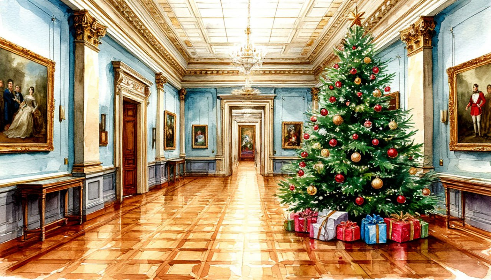

Новогодние краски Эрмитажа

Даты тура: с 30 декабря 2025 года (вт) по 3 января 2026 года (сб)
Стоимость тура:
- 22 500 р. - взрослый
- 22 300 р. - пенсионеры/школьники
- 26 500 р./чел - одноместное размещение
По программе:
- - Обзорная экскурсия "Новогодний город"
- - Территория Петропавловской крепости
- - Вечерняя экскурсия по праздничному городу
- - Экскурсия в Эрмитаж
- - Экскурсия на Дворцовую площадь
- - Размещение в отеле Cosmos Saint-Petersburg Pulkovskaya Hotel 4*
- - Для желающих банкет в кафе города - за доп.плату
- - Беспроигрышная лотерея
Программа тура:
1 день:
- 17-00- выезд из Костромы от ТРЦ "РИО"
2 день:
- Прибытие в Санкт-Петербург.
- Завтрак в кафе города.
- Обзорная экскурсия "Новогодний город" поведет вас по удивительной тропе новогодних удовольствий, оставит в памяти самые невероятные воспоминания и превратится в добрую семейную традицию: Вас встретит Невский проспект, Площадь Искусств, Исаакиевская площадь с Собором, Дворцовая площадь, Сфинксы, Меньшиковский дворец, Университет, Стрелка Васильевского острова, Ростральные колонны, Зимний дворец, Марсово Поле и др.
- Вас ждёт незабываемая атмосфера новогодней сказки и города окутанного волшебством: посещение Казанского собора, на прилегающей к которому площади традиционно ставится одна из великолепнейших елей города. Осмотр Никольского Морского собора – уникального памятника русского зодчества середины XVIII века, напоминающего об истории и традициях русского флота.
- Экскурсия в Петропавловскую Крепость.
- Вы сможете ощутить, посмотреть, прикоснуться, погрузиться в атмосферу, где время измеряется десятилетиями и веками. Петропавловская крепость - сердце Санкт-Петербурга, с ее закладки берет начало история города. В ходе экскурсии Вы узнаете о предыстории рождения города на Неве, о фортификационных особенностях крепости, почему ангел на шпиле собора вращается, о самых первых постройках в Петербурге, о рождении традиции полуденного выстрела, какие великие личности томились в заключении Тюрьмы Трубецкого Бастиона.
- Обед в кафе
- Заселение в гостиницу*
- *Cosmos Saint-Petersburg Pulkovskaya Hotel 4*
- Свободное время.
За дополнительную плату (по желанию) СТРОГО ПРИ БРОНИРОВАНИИ ТУРА:
- Новогодний банкет в кафе «Чайковский» 2026 с программой. Стоимость 9700 руб./чел.
- Трансфер до кафе в одну сторону.
- Зажигательный Новый 2026 год в компании с поющим ведущим ОЛЕГ ВОЛГА «Новогодний серпантин» (пришлем программу и меню по запросу)
- Так же в свободное время у Вас будет возможность побывать на Дворцовой площади.
3 день:
- Поздний завтрак в отеле «шведский стол»
- Свободное время
- 17-00 Выезд на экскурсию «Новогодний Петербург». Вы окунетесь немного назад в мир детства, в мир деда Мороза и Снегурочки, елки и елочных игрушек. Услышите увлекательный рассказ об указе Петра I, старом Новом Годе, появлении нового календаря. Окунетесь в традиции празднования Нового года в Санкт-Петербурге Вспомните церковные праздники: сочельник, Рождество, Крещение, Святки. Мы полюбуемся световым украшением города: побываете на Невском проспекте, стрелке Васильевского острова, пл. Островского, пл. Декабристов, Исаакиевской пл., Дворцовой пл., пл. Искусств.
- И главное! Все участники экскурсии смогут загадать заветное новогоднее желание!
- Экскурсия к главной елке города на Дворцовую площадь, где установлена самая большая елка в городе. Звучат классические произведения – яркое и запоминающееся событие петербургской зимы, ставшее брендом Петербурга
- Возвращение в отель.
4 день:
- Завтрак в отеле «шведский стол»
- Автобусная экскурсия «Императорский Санкт-Петербург»
- Любовные истории, загадочные интриги, дуэли, дворцовые перевороты, мистические совпадения каждый из членов царствующей династии Романовых оставил свой след в истории и нашей страны, и Санкт-Петербурга. Во время экскурсии Вы узнаете, где они жили, как проводили время, чем увлекались. А посещение Государственного Эрмитажа раскроет Вам некоторые секреты личной жизни царственных особ и познакомит с роскошным Зимним дворцом - парадной зимней резиденции российского императорского двора.
- Экскурсия в Эрмитаж
- Эрмитаж – один из крупнейших художественных музеев мира. Он начинался, как личное собрание императрицы Екатерины II и долгое время оставался закрытым для широкой публики. Сейчас его коллекции насчитывают более 3,5 миллионов экспонатов. Среди них шедевры Леонардо да Винчи, Рембрандта, античная скульптура, египетские древности, настоящая мумия и многое другое.
- Обед в кафе города
- Выезд из Санкт-Петербурга
5 день:
Прибытие в Кострому в первой половине дня (ориентировочно)
В стоимость тура входит:
- - проживание в гостинице*
- * Cosmos Saint-Petersburg Pulkovskaya Hotel 4* (Номер реестровой записи: С782024022202)
- - питание: 3 завтрака + 2 обеда
- - услуги гида-экскурсовода
- - экскурсионная программа
- - автобусное обслуживание по программе тура
Дополнительно оплачиваются (по желанию) СТРОГО ПРИ БРОНИРОВАНИИ
ТУРА:
- Банкет в кафе «Чайковский» 2026 с программой - 9 700 руб./чел.
- Для бронирования необходимы данные паспорта РФ и свидетельства о рождении, если с вами путешествуют дети
- Предоплата – 50% от стоимости тура. Остаток за 30 дней до даты выезда.
- Любой тур можно оформить не выходя из дома. Подробнее: Тут
Стоимость тура не зафиксированы и могут быть изменены в большую или меньшую сторону в зависимости от уровня спроса в любой момент.
Время начала экскурсий и их порядок указано ориентировочно.
Фирма-исполнитель оставляет за собой право замены экскурсий без уменьшения общего объема экскурсионной программы.
По вопросам бронирования обращайтесь: